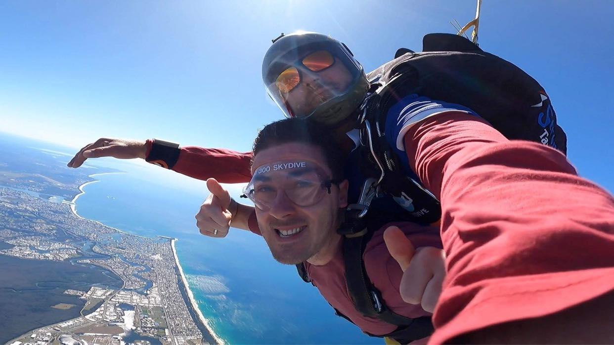

<!DOCTYPE html>
<html lang="en">

</html>

<head>
  <meta charset="UTF-8" />
  <meta http-equiv="X-UA-Compatible" content="IE=edge" />
  <meta name="viewport" content="width=device-width, initial-scale=1.0" />
  <title>About Me</title>
  <link rel="stylesheet" href="style.css" />
</head>

<body>
  <!--nav bar-->
  <header>
    

    <nav>
      <a href="index.html">Homepage</a>
      <a href="projects.html">Projects</a>
      <a href="blog.html">Blog</a>
    </nav>
  </header>

  <!--text and pictures-->
  <main>
    <article class="article-container">
      <h2>Why Programming</h2>
      <p> I've had a very interesting and creative life though just like may others I found myself perhaps a little lost
        and needing direction. It was at this point I discovered coding through my partner and uncle who have made very
        sucessful careers out of it through graduating at Coder Academy. As a 28 year old I'd like to now follow in
        their footsteps and pursue a career as a software engineer.</p>
    </article>

    <article class="article-container">
      <h2> Education</h2>
      <p>I have graduated university, and as a result can speak and understand Japanese. I have also learnt the basics
        and some advanced concepts of HTML and CSS and am about to learn Python, JavaScript
        and many more programming languages.
        <br>
        <br>
        Through a Diploma of IT I will be able to expand my skills and knowledge even further. I'm always commited to my
        projects and
        work effectivley and am always wanting to learn new skills.<br><br>
        <a href="resume/Resume 2022.pdf" id="click"> Click here</a> to read my resume.
      </p>
      
      
      
    </article>

    <article class="article-container">
      <h2>Hobbies</h2>

      <p>My hobbies include gaming, spending time with family, going places with my dogs/partner and doing
        art. Below are examples of pen art. <br> The interseting thing about pen art is that you can never take back a
        mark you make, so the imperfections become the final art. </p>
      
      
      
      

      <a href="projects.html" class="btn-startjourney">Next page</a>
    </article>
  </main>
  <!--Socials-->
  <section id="social-links">
    <address>
      <a href="https://www.github.com/doigiee"></a>
      <a href="https://www.linkedin.com/in/joshua-doig-63ab64134/"></a>
      <a href="http://www.twitter.com"></a>
      <a href="https://www.facebook.com"></a>
    </address>
    <p>Follow me to be updated on my journey</p>
  </section>

  <footer>
    <p>&copy; JOSHUA DOIG 2022</p>
  </footer>
</body>

</html>